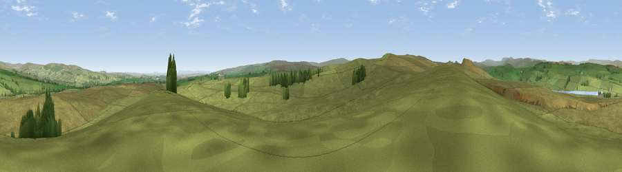

Viewpoint near Cotherstone
#12042 in England · top 30% of its area beats it · near CotherstoneWhere it is
The exact computed spot (NY 96975 17675). Click the marker for map links.
The view, rendered

A 360° render of this exact spot computed from the terrain model, tree cover and land cover — summer colours, afternoon light, calibrated against photographs of famous viewpoints. Real trees, hedges and buildings will differ in detail.
The panorama
Grey silhouette: terrain skyline in each direction (720 bearings, Earth curvature and refraction included). Dashed green: skyline with trees (+15 m) and buildings (+8 m) as obstacles. Blue strip: how far the ground is visible on each bearing.
Where the view opens
Wedge length = distance to the farthest visible ground on that bearing (vegetation-aware). Rings at 10, 25 and 50 km.
What fills the view
96% grassland · 3% woodland ·
Angular shares of the visible panorama (visual magnitude), not map area. Landscape diversity 0.09 (0–1 Shannon).
Key numbers
More beautiful places nearby
The staircase of upgrades: each row has a higher view potential than everything closer. Driving times are estimates from straight-line distance, calibrated against real road routing — check an actual route before setting out.
| Place | Direction | Drive | Score |
|---|---|---|---|
| Viewpoint near Bowes | SW · 1 km | ~4 min | 63.8 |
| Viewpoint near Mickleton | N · 4 km | ~9 min | 65.7 |
| Viewpoint near Mickleton | NNW · 4 km | ~10 min | 69.7 |
| Viewpoint near Middleton-in-Teesdale | NW · 7 km | ~15 min | 70.2 |
| Viewpoint near Eggleston | NE · 8 km | ~16 min | 76.0 |
| Viewpoint c10024_7603 | SW · 24 km | ~39 min | 76.9 |
| Great Dun Fell | WNW · 30 km | ~47 min | 77.8 |
| Little Dun Fell | WNW · 31 km | ~48 min | 78.4 |
54.55431, -2.04828 · source: screening · position refined by local search. Computed location — check access rights before visiting.